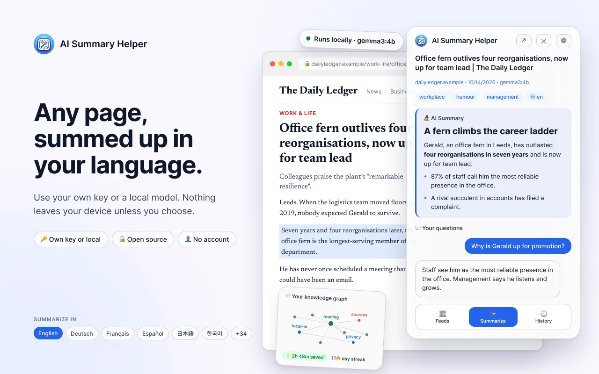

智能提炼网页。
留存核心价值。
AI Summary Helper 通过内置 RSS 阅读器追踪你关注的站点，将任意网页保存为带有 AI 总结且可检索的文章——更提供本地生成的阅读文摘，直接发送离线内容至 Kindle 或其他设备，助你轻松重温与深度阅读。
只需在书签栏添加一个链接，适用于任何浏览器与操作系统（包含 iOS）。无需安装，摘要直接在页面呈现。

摘要与原文并排呈现
快速浏览提纲、随时追问细节，并精准定位原文出处。基于 2.2 版本的真实界面演示。
-

侧边栏即时摘要无需离开当前页面，即可掌握核心内容。 -

针对页面内容提问回答自动高亮并回溯至对应的原文段落。 -

2.2 版本新功能：分栏视图大屏体验更佳，列表、知识图谱与分析看板并排呈现。 -

2.2 版本新功能：学术研究模式专为学术论文设计，支持研究细节解析、DOI 引用与文献集管理。
在真实网页上点击“生成摘要”
这是在您浏览器中直接运行的扩展真实界面与示例文章。数据完全保留在本地，不会上传至任何外部服务器。
重构稍后读工具该有的样子
保存、理解、检索并真正重读——无需再为绑定您个人归档的订阅服务买单。
你可以自由选择模型与服务器，并完全掌控数据是否离开你的本地设备。
AI 摘要，模型随心选择
支持 OpenAI、Gemini、Mistral、DeepSeek 或自定义端点——也可以直接指向本地 Ollama 模型，这一步完全在本地运行、无需联网。
原位幽灵高亮，直接呈现在页面上
AI 会轻度高亮标出 最关键的原文段落 ——方便你 一眼掌握核心洞见，且高亮内容会随摘要一同导出至 Kindle、LocalSend 或 Markdown。
真正的设备端本地搜索
依托浏览器内置的 TF-IDF 索引，支持对标题、标签和文章全文进行瞬时检索。无需网络往返，零延迟，数据绝不上云。
带着目标保存，告别盲目囤积
标记“待办决定”，设定理由与时间节点并获得提醒——不再让收藏文章沉睡在永远不看的堆积列表里。
智能精选文摘
一键精选小体量且主题多元的收藏内容，避免同质化，并自动打包为单一文件推送到 Kindle 或 LocalSend。
知识图谱，超越简单列表
直观呈现收藏内容之间的关联——不仅基于共同标签，还能自动识别无共同标签但主题相似的文章。
内置 RSS 阅读器
关注博客与新闻网站，按来源、标签、日期或心情筛选，支持导入 OPML，一键即可打开或生成摘要。直接在扩展程序内播放播客 Feed，还可选择通过每日头条生成 AI 每日回顾。收藏的内容会保存至归档，订阅源数据完全保存在您的本地设备上。
支持 20 多种语言与跨平台
使用您自选的语言阅读与生成摘要。支持扩展、原生侧边栏或 Bookmarklet —— 适用于浏览器扩展无法覆盖的各种场景。
大多数保存的内容，往往再未被打开
有关书签行为的各项研究表明，绝大多数保存的文章从未被重新阅读。这并非自律问题——而是工具只让“保存”变得极其容易，却在“协助筛选阅读”方面毫无作为。
1. 点击“生成文摘”
系统会自动挑选 5 篇保存的内容——兼顾时效性与主题多样性，避免同类资讯扎堆。
2. 按阅读偏好调整基调
无论是轻松明快、客观中立，还是深刻严肃——文摘会根据您当前的心境智能倾向匹配内容。
3. 发送并离线阅读
一键打包推送到 Kindle 或局域网内的其他设备。在飞行、通勤或周末断网前轻松完成同步。
手机一键分享链接，电脑即刻查阅摘要
AISH Companion 会在手机系统分享面板中添加“AISH”选项。链接通过端到端加密直接同步至电脑浏览器并在“历史记录”中就绪，轻点一下即可生成摘要。
1. 一次配对
在浏览器扩展中打开 Settings → Phone inbox，使用 Companion 应用扫描二维码即可配对，无需注册账号。
2. 从任意 App 分享
在手机浏览器、Newsletter 或聊天软件中点击“分享”→ 选择“AISH”。支持离线使用，恢复联网后会自动同步。
3. 点击生成摘要
分享的链接会出现在 History → From phone 中。点击 Summarize，扩展将通过你配置的 AI 服务商自动完成总结。
您的数据完全由您掌控
搜索、内容去重、标签整理、阅读难度与语气评分，以及“相似文章”推荐，全部在您的浏览器本地运行——无需云端服务器，无需注册账户即可使用全部核心能力。唯一需要外发的数据仅为发送至您指定 AI 服务商的摘要请求；若使用本地 Ollama 模型，则所有数据均完全保留在本地。
免费起步，按需升级 Pro。
Support Pass 不仅适用于本扩展程序——它是一把通用的高级权限钥匙，可解锁 byphil 开发的所有产品，并在您的 byphil 账户中统一管理。
- 使用个人 AI API Key 或 Ollama 享受无限次摘要生成
- 本地搜索、文摘提取、知识图谱——全部在设备端运行
- 包含 3 次 Kindle 推送额度
- 无限次 Kindle 和 LocalSend 推送（含文摘打包）
- 畅享 byphil Cloud AI，无需配置个人 API Key
- 解锁 byphil 旗下所有工具的 Pro 特权
安装前需知
使用该工具需要注册账户吗？
不需要。安装后，只需填入您自己的 AI 服务商 API 密钥（或连接本地 Ollama 模型）即可直接开始使用。仅当您需要使用 byphil Cloud 或通过 Support Pass 获取无限次 Kindle/LocalSend 推送时才需要登录账户。
哪些数据会被发送到外部？
仅有摘要请求会发送至您所配置的 AI 服务商；如果您使用 RSS 阅读器，则会向您订阅的 Feed 发出网络请求；此外，仅在您点击 AI 回顾时，才会发送当天的头条和简短摘要。搜索、内容去重、标签整理、阅读难度与情绪评分，以及“相似文章”推荐，全部基于您保存的归档在本地运行。
是否可以完全脱离云端依赖运行？
可以——将其连接至本地 Ollama 模型，摘要生成即可完全在您的设备上完成。其余所有功能本身已完全在本地运行。
如果我停止订阅 Support Pass，已保存的内容会怎样？
您的归档数据将完整保留在原处——即您设备上的浏览器本地存储中。Support Pass 仅用于解锁依赖云端的增值功能（如 byphil Cloud AI、无限次 Kindle/LocalSend 推送），绝不会限制您访问或管理已有保存内容。
如何安装 Android 配套应用？
通过上方链接下载 APK（或前往 最新发布页面），打开安装包并在 Android 系统提示时允许通过浏览器安装。安装后在扩展的 Settings → Phone inbox 中扫描二维码即可完成配对。目前该应用尚未上架 Google Play。
这个项目开源吗？
是的——该扩展程序的源代码已公开在 GitHub。
关于阅读、搜索与本地化开发的思考
我们在开发搜索、文摘和去重功能时的经验总结，以及它们如何为您评估稍后读工具提供参考。
从 Bookmarklet 到 2.0：现在的 AI Summary Helper 究竟是什么
项目始于 2024 年的一个一键 Kindle Bookmarklet。以下是它一路重构演进至开源 2.0 版本的所有变化。
阅读全文 → 指南正在寻找 Pocket 的替代方案？这几点才是核心关键
Pocket 停服后留下了真正的空白。这份选型指南基于您的实际使用场景，而非仅仅看哪款应用界面更相似。
阅读全文 → 产品收藏的内容大多再也不会读？这里有真正的解决方案。
大部分被收藏的文章再也没被打开过。探讨 Digest 存在的原因，以及为何它刻意避免让你的未读清单越积越厚。
阅读全文 →byphil 生态体系成员
AI Summary Helper 是 byphil 打造的多个独立工具之一。一个账户搭配一张 Support Pass，即可畅享旗下所有现有及未来发布工具的高级权限。
AI Summary Helper
本地化网页总结、保存与检索。
PetSetLife
面向旅居与远程办公宠物看护者（Pet Sitter）及寄宿家庭的互助社区。
知识图谱Matrix
探索知识连接与阅读行为，专为长期知识图谱构建而设计。